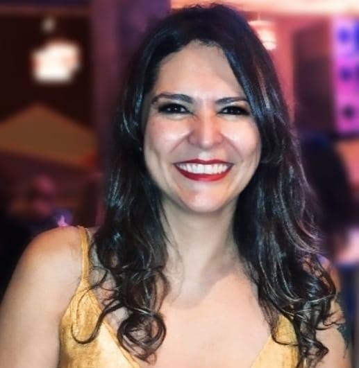

NOSOTRAS

Lic Carmen Rozo:
Lic en Psicologia (CBA) - Master en Psic. Gestaltica - Docente Universitaria (UCSE-DASS) y en Diplomatura Univ. (UNJU) - Directora de Proyectos en Extension Univ (UCSE-DASS) - Formacion en Trauma (EMDR) y en Terapia de Parejas - Coordinadora de Talleres y Grupos de Desalloro Personal y Terapeuticos.
Lic Cecilia Aguero:
Psicóloga de la UNT - con Formación de Base Sistemica - Posgrados en RRHH (Recursos Humanos-RRLL Relaciones Laborales) - Tesista de Esp. Inves. Educativa, Diplomatura de Terapia en Grupo - Educación Emicional - Mindfullnes.